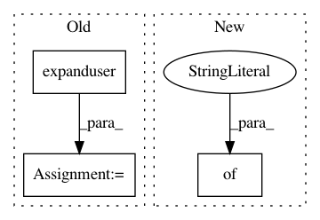

844b241f93143e8f0f00454f8bccf20df9d05182,prosaic/cfg.py,,,#,19
Before Change
PG_HOST = environ.get("PROSAIC_DBHOST", "127.0.0.1")
PG_PORT = int(environ.get("PROSAIC_DBPORT", 5432))
DEFAULT_DB = environ.get("PROSAIC_DBNAME", "prosaic")
PROSAIC_HOME = environ.get("PROSAIC_HOME", join(expanduser("~"), ".prosaic"))
DEFAULT_TEMPLATE = "haiku"
// TODO support for hocon (.conf)
DEFAULT_TEMPLATE_EXT = "json"
TEMPLATES = join(PROSAIC_HOME, "templates")
After Change
DEFAULT_PROSAIC_HOME = expanduser("~/.prosaic")
DEFAULT_TEMPLATE = "haiku"
DEFAULT_DB = {"user": "prosaic",
"password": "prosaic",
"host": "127.0.0.1",
"port": 5432,
"db": "prosaic"}
DEFAULT_CONFIG = database: {
user: {user}
password: {password}
In pattern: SUPERPATTERN
Frequency: 3
Non-data size: 3
Instances
Project Name: vilmibm/prosaic
Commit Name: 844b241f93143e8f0f00454f8bccf20df9d05182
Time: 2016-05-28
Author: nathanielksmith@gmail.com
File Name: prosaic/cfg.py
Class Name:
Method Name:
Project Name: vatlab/SoS
Commit Name: 2ad24c0af410a6021584b45c76ef96973a5a4475
Time: 2017-03-14
Author: ben.bog@gmail.com
File Name: sos/PBS/sos_task.py
Class Name: PBS_TaskEngine
Method Name: kill_tasks
Project Name: pyannote/pyannote-audio
Commit Name: b7efb76e284f1cee02280dcbf2dee9b8d5c72317
Time: 2018-11-22
Author: bredin@limsi.fr
File Name: pyannote/audio/pipeline/speaker_diarization.py
Class Name: Yin2018
Method Name: __init__